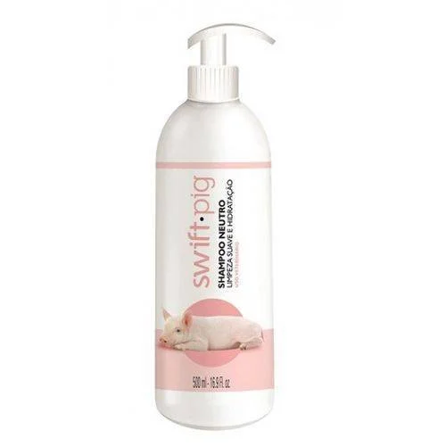

Um gurizão viraliza ao fazer um shampoo de porco.
Um gaúcho inovador criou um shampoo natural e livre de químicos para melhorar a higiene e o bem-estar dos porcos em sua propriedade rural. O vídeo do produto viralizou no Instagram e TikTok, atraindo muitos elogios e interesse de empresas veterinárias para parcerias. A iniciativa destaca a criatividade e empreendedorismo gaúcho, aliando inovação e tradição no cuidado sustentável dos animais.